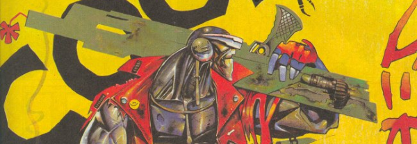

An assassin robot (and sometimes transvestite) that's a core member of The A.B.C. Warriors, but had this one story under his own banner.
Art by Simon Bisley
| Story Title | Parts | Pages | w indicates a wraparound coverCovers | Year(s) | Issues | Writer | Artist | Colourist | Letterer |
|---|---|---|---|---|---|---|---|---|---|
Linked to The A.B.C. WarriorsHis Greatest Hits | 1 | 8 | 0 | 1996 | SFS19 | Pat Mills | Tom Carney | <-- | Ellie de Ville |
| >> Posters / Teasers << | |||||||||
Linked to The A.B.C. Warriors Star ScanJoe Pineapples | 1 | 1 | 0 | 1987 | 535 | n/a | Simon Harrison | <-- | n/a |
Linked to The A.B.C. WarriorsJoe Pineapples - Cool Assassin | 1 | 1 | 0 | 1988 | 571 | n/a | Simon Bisley | <-- | n/a |
Linked to The A.B.C. Warriors HunkscanJoe Pineapples | 1 | 2 | 0 | 1996 | SFS19 | n/a | Simon Bisley | <-- | n/a |
From The A.B.C. Warriors Star ScanJoe Pineapples | 1 | 1 | 0 | 2011 | 1719 | n/a | Liam McCormack-Sharp | <-- | n/a |
| >> Features << | |||||||||
From The A.B.C. WarriorsFact File: Joe Pineapples | 1 | 1 | 0 | 1985 | 400 | Pat Mills | Reprint.Mike McMahon | [b&w] | Reprint.Peter Knight |
From Tharg's Datachips#13: Joe Pineapples | 1 | 0.5 | 0 | 1996 | 996 | n/a | Kevin Walker | <-- | n/a |
| year | episodes | pages |
| 1986 | 0 | 0 |
| 1987 | 0 | 0 |
| 1988 | 0 | 0 |
| 1989 | 0 | 0 |
| 1990 | 0 | 0 |
| 1991 | 0 | 0 |
| 1992 | 0 | 0 |
| 1993 | 0 | 0 |
| 1994 | 0 | 0 |
| 1995 | 0 | 0 |
| 1996 | 1 | 8 |
| 1997 | 0 | 0 |
| 1998 | 0 | 0 |
| 1999 | 0 | 0 |
| 2000 | 0 | 0 |
| 2001 | 0 | 0 |
| 2002 | 0 | 0 |
| 2003 | 0 | 0 |
| 2004 | 0 | 0 |
| 2005 | 0 | 0 |
| 2006 | 0 | 0 |
Comic strip data (excludes other content):